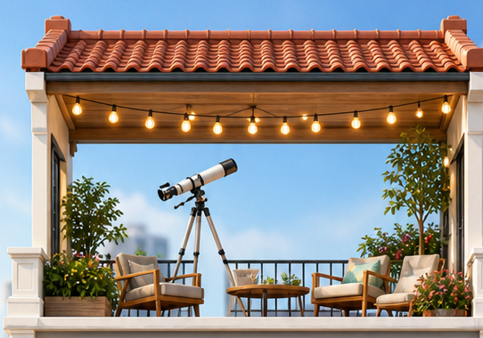

Private test 운영 기준
날짜가 지난 “오늘 업데이트”처럼 보이지 않도록, 옥상에서 볼 대상, 질문, 마무리 루틴을 현재 운영 항목으로 고정했습니다.
- 관측달, 목성, 토성처럼 아이가 이름을 기억하기 쉬운 천체를 오늘 우선 대상으로 둡니다.
- 질문“별은 왜 반짝일까?”를 오늘 가족 질문으로 골라 일기장에 넘깁니다.
- 마무리화면 종료 후 5분 호흡과 물 한 잔을 오늘 밤 루틴으로 표시했습니다.

옥상은 가족이 하루를 마무리하는 체험 공간입니다. 망원경으로 별을 찾고, 아이에게 짧은 과학 이야기를 들려주는 흐름으로 구성합니다.
날짜가 지난 “오늘 업데이트”처럼 보이지 않도록, 옥상에서 볼 대상, 질문, 마무리 루틴을 현재 운영 항목으로 고정했습니다.